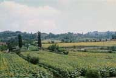
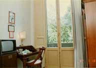

 イタリア一人旅をしていて、ローマからフィレンツェに列車で向かった、暑い日で６時間位かかったと思う。途中の田 園風景は日本とはどこか少し違う風情がある。平原で山がなく緩やかな丘がうねっている、畑は黄色、緑色と交差し所々 に木々が立ち並んでいる。 午後にフィレンツェに到着する。宿は予約していないのでインフォメーションセンターに向かうと行列をなしていて、 時間がかかりそうであった。ぶらぶらと歩いて宿を探し交渉することにした、１軒目では満室であったので何処か紹介し て貰う。そこに行くと感じの良い女性が応対してくれて、ダブルしかなく値段が１万５千円であるという。７千円位を考 えていたので値下げ交渉をすると、マスターが間も無く戻るので交渉してくれると言ってくれた。マスターが直ぐに戻っ て、彼女が直ぐに交渉してくれたが、１万２千円までしか下がらなかった。 ここで、７千円位のホテルを紹介してもらった。電話をしてくれて、空き部屋があることを確認し予約をしてくれた。そ こまでバスで向かい、無事チェックインする。 フレンツェの町外れで、道路を挟んで向かいは林が延々と続いている、何となくモーツァルト、ガリレオらが馬車に乗っ て町を出入りするときにはここを通ったのかと思いを馳せた。列車の長旅で汗をかいて汚れていたので早速シャワーを浴 びることにした。 浴室は狭くバスタブはなくシャワーだけしかない、頭からお湯をかぶった瞬間ちょっと変な感じがした。シャンプー で頭を洗った瞬間ヌルヌルし始めた。あ！この水は硬水だ！と思った。初めての経験である。頭を洗い引き続き体を洗う、 いざお湯で洗い流し始めたら、ヌルヌル、ヌルヌルする。いくらお湯をかけてもヌルヌル、ヌルヌル、ヌルヌルである。 兎に角お湯でどんどん流すがヌルヌル、ヌルヌル・・・・１５分も流したろうか、まだヌルヌル、ヌルヌル・・ええええ ぇぇぇ！おい！一生ヌルヌルかよ！・・・・・と思いながら流すは流すは、兎に角お湯をじゃんじゃんかけた。 ３０分以上居たように思う、やっとぬめり感がなくなった。やれやれである。その後夕方の散策に出て、裏山を上りミ ケランジェロ広場に向かう。町を一望できる公園で、気持ちの良い散策ができた。２００１年１０月２６日 記
|